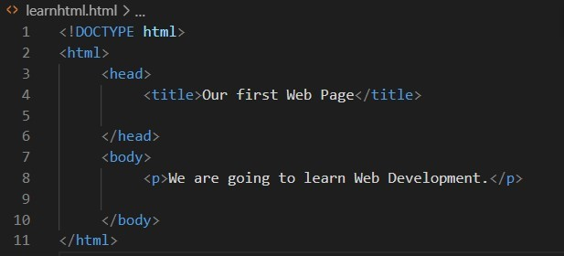
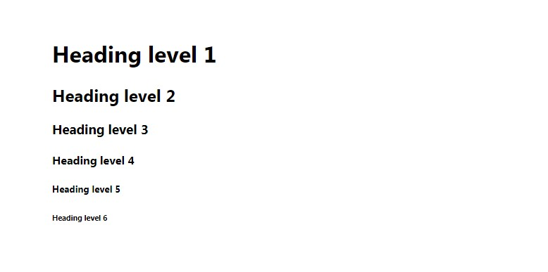

WELCOME TO HTML
Introduction of HTML
About the Web
The purpose of this page is to introduce you to basic concepts of web programming, using fundamental technologies such as HTML and CSS. As already known, web is quite pervasive not just for building websites but also for fully-fledged web applications. Today’s web technologies support development of quite advanced applications that at some point were only possible for native platforms such as Desktops and mobile devices. In this page we are going to learn the basics oftwo fundamentaltechnologies of the web called HTML and CSS. These are not programming languages per se, rather they are what we call markup and stylesheet languages, which mostly have to do with how a webpage looks, instead of how it works.
As you already know, websites and web applications require you to use a web browser in order to access them.
In a nutshell, the moment you write an address in the address bar and hit Enter, what happens in the background is that the browser communicates with the computer (server) that hosts the website at that address (e.g. google.com) and requests the files to run the website.
Those files are at the very least a bunch of HTML and CSS files (and of course some other file types but you’ll learn about those later).The server sends back the HTML and CSS, and the browser parses them and displays the web-page to you. If you know a little bit about programming languages, you may have noticed that there is no compilation or anything of the such in this case. At most, here we have to do with interpretation, i.e. the browser interpreting whatever code is being served from the server.
If someone had protected the HTML language for making Web pages, then we wouldn't have the World Wide Web.
Fang ShengWhat is HTML?
HTML is one of the essential languages in the web that allows us to build the structure of our website. It is not a programming language, rather its what its called a “markup language”. Itstands forHyper Text Markup Language.We use HTML to simply describe the building blocks of our site, such as menus, links, etc. This means that HTML is not concerned at all with any details about how a component should look, i.e. whether it should have a red or a black background. There is another way to do that. With HTML all we care about is describing how our website is structured. You can easily check the HTML of websites you use daily. Just right click somewhere on the page and find a menu item named“View page source”. A new window will open with the HTML structure of the page. Some (such as Facebook) have very complex HTML (that is probably auto-generated by other software), but there are others (such as Wikipedia) that are easier to understand.
“We love creative and design with passion of building epic web experiences to blow people's minds.”
“Let us take you into a deeper experience, make this moment a lasting conveyable memory by learning HTML."
Html Structure
HTML is composed ofelements.These elements structure the page and define its content. Each element is comprised of a tag and content.
“There are five important things for living a successful and fulfilling life: never stop dreaming, never stop believing, never give up, never stop trying, and never stop learning.”
The tag usually explains the content that is within them. They usually come in pairs, i.e. an opening tag
and a closing tag. The purpose of an opening and a closing tag is to simply specify where the element
begins and where it ends. Looking at the above image, we can easily understand that this element is a
paragraph (although a one-line one). We add an opening and a closing tag to it to describe it to the
browser, that this part of the raw text is a paragraph we’re talking about, so that the browser knows
how to handle it, but most importantly, because we may need to change the looks of it at the very near
future.
What happens under the hood is that when the browser displays a webpage, it reads the HTML code
from a text file, and looks for special codes or tags that are marked with
HTML Files
HTML code is written in HTML files, which are nothing more than simple text files that end with the extension.html. You can go ahead and try it yourself right now.
- Open Notepad++ (install Notepad++ or any other editors that are listed below)
- Komodo Edit
- Apache NetBeans
- Visual Studio Code
- Bluefish
- Write the paragraph we saw before
- Save the file. Name it however you want, just make sure that it ends with .html. Save it somewhere you can easily access it.
- You’ll see that it usually gets the icon of your default browser (Chrome, or Firefox, or IE). Double click on it. It’ll open in your default browser and you’ll see the above paragraph

You have come so far!
You can do it!
Believe in yourself!
The Body
We’ve learned a bit about the paragraph tag, however, its not a recommended practice to just throw these tags in the HTML file. Fortunately, browsers are very forgiving and don’t require a strict structure, and will probably display whatever tags you put, and even with minor mistakes. However, its good to follow best practices when it comes to building websites due to numerous reasons, such as maintainability, and accessibility
Each HTML document has a basic structure. If you click on a website, you’ll see that this is probably the case. The structure is as follows:
First, the top-most tag is the HTML tag, that describes that this is an HTML document. Inside that there are two important parts, namely the head and the body (described by their respective tags). The purpose of these two tags is mainly descriptive, i.e. in most cases they don’t have any specific functionality. However, usually in the head we put HTML elements that are not to be displayed to the user, such as metadata about the page (i.e. the page title that is shown in the browser tab). On the other hand, we use the body to put elements that are at one point or another displayed to the user.
From the above, you’ve also implicitly learned that HTML tags can be nested, i.e. they can be composed of other tags as well. You might’ve already understood that this is the case by viewing the source of already existing websites. See below an example of how such structure is put into use.
Just a little reminder to everyone that anything is possible, especially when you‚Äôve hit a wall with your code and feel like you‚Äôre getting nowhere.üëç
Try copying and pasting this code in an HTML file and run it in the browser. Notice how the title is changed in the browser tab. Apart from this, there is not much change from your previous HTML file, however, the structure is more compliant with the HTML standard, and we can be sure that different browsers will display the site properly.
Headings
We’ve already learned a bit about HTML structure and a basic tag to display paragraphs. Let’s see some that allow us to display headings. Paste the following code in a new HTML file and see what happens.
These tags help us structure our documents better, whereby we use them to describe titles in our webpage. You’ll see that the browser gives them a default styling, i.e. h1 has a larger font than h2. However, always remember that HTML is about structure and not about looks. If you want to display a smaller looking title, but which is still considered to be a first-level heading, do not use a smallerlooking tag, like an h4. For the beginning you could, however, its good to be aware that this is not a good practice, as the looks of the tags are supposed to be altered using CSS (which we’ll get to know later).
Paragraphs
We’ve already seen paragraphs, however its worth knowing that whenever a browser encounters a paragraph tag, it inserts a blank line then begins a new line. Try pasting the following code (which has two paragraphs) to see how the browser displays them
Text breaks
There are cases where we need to display a line break but not necessarily a new paragraph. There is a tag in HTML that does just that and its named “br”.This is also a different type of tag in that it does not require a closing tag. We also call them empty tags. Try placing one somewhere inside a paragraph and observe what happens.
"No one in the brief history of computing has ever written a piece of perfect software. It's unlikely that you'll be the first." Andy Hunt
Comments
You can add comments to your HTML source by using the following syntax: !-- Write your comments here --Notice that there is an exclamation point (!) in the start tag, but not in the end tag.Comments are not displayed by the browser, but they can help document your HTML source code Comments are also great for debugging HTML, because you can comment out HTML lines of code, one at a time, to search for errors.
Basic HTML Reference
| Attribute | Description |
|---|---|
| alt | Specifies an alternate text when the original element fails to display. |
| disable | Specifies that the specified element/group of elements should be disabled. |
| href | Specifies the URL of the page the link goes to. |
| id | Specifies a unique id for an element. |
| src | Specifies the URL of the media file. |
| multiple | Specifies that a user can enter more than one value. |
| onblur | Script to be run when the element loses focus. |
| style | Specifies an inline CSS style for an element. |
| target | Specifies the target for where to open the linked document or where to submit the form. |
| wrap | Specifies how the text in a text area is to be wrapped when submitted in a form. |
Tips and Tricks
- Notepad++ is an excellent, free program, which acts like a regular notepad, but you can save and test your code live in a browser. (It also allows almost any coding language. HTML, CSS, python, Javascript, etc. )
- You might like to try finding a simple webpage on the Internet, and playing around with the code. Try moving some text, changing the font, altering images, anything that takes your fancy!
- You could get a notebook and write all the codes down, so that if you need reminding, you can just open your notebook and see. You could also print this page out as a helpful point of reference.
- When coding, make sure you lay your code out neatly, so that it is possible for you and others to understand it. Use for HTML comments, which don't show up in the webpage, but do in the code.
- XML and RSS are becoming more and more common on websites these days. Their code may seem tough to read and understand to the human observer, especially when viewed on a HTML source code file, but they have their own effects to them.
- The markup tags themselves in HTML are not case sensitive, but using all lower case (as used on this page) is highly recommended for standardization purposes and for compatibility with XHTML.